| Name | Image | Rarity | Type | Cost | Description |
|---|
| Dregs |  | Curse | Curse | | Unplayable. |
| Clean up Workshop | 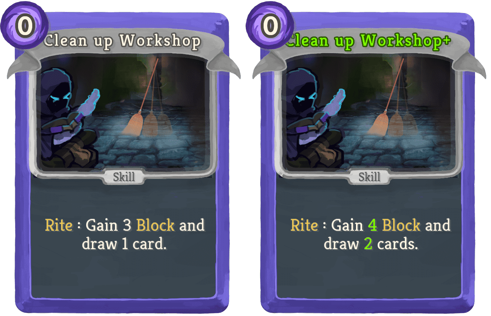 | Basic | Skill | 0 | Rite : Gain 3 (4) Block and draw 1 (2) card(s). |
| Cursed Wand |  | Basic | Attack | 1 | Gain 5 (7) Block. Deal 7 (9) damage. Add a Dregs card into your hand. |
| Defend | 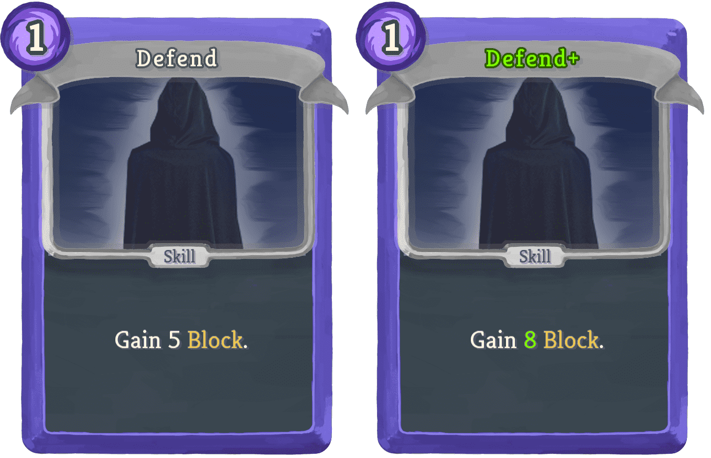 | Basic | Skill | 1 | Gain 5 (8) Block. |
| Strike | 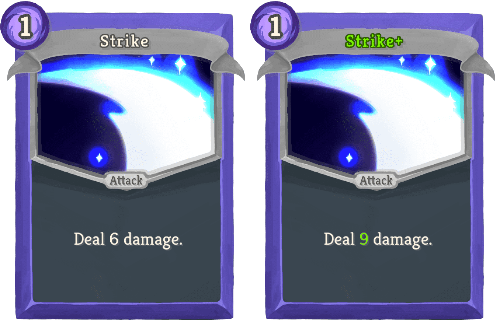 | Basic | Attack | 1 | Deal 6 (9) damage. |
| Circle of Corruption | 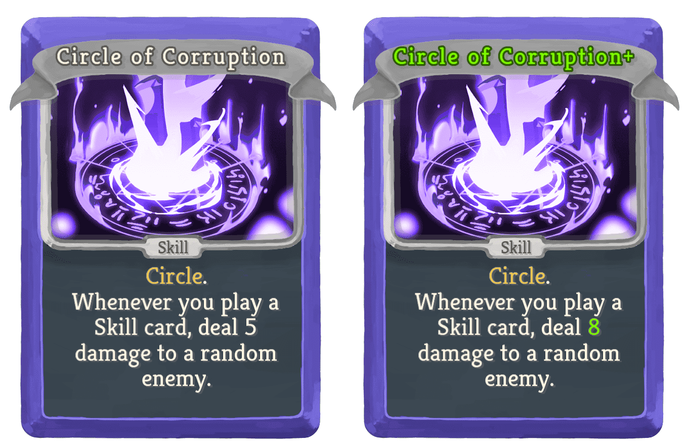 | Common | Skill | | Circle. Whenever you play a Skill card, deal 5 (8) damage to a random enemy. |
| Circle of Flame |  | Common | Skill | | Circle. Whenever you play an Attack card, deal 2 (4) damage to ALL enemies. |
| Cursed Amulet | 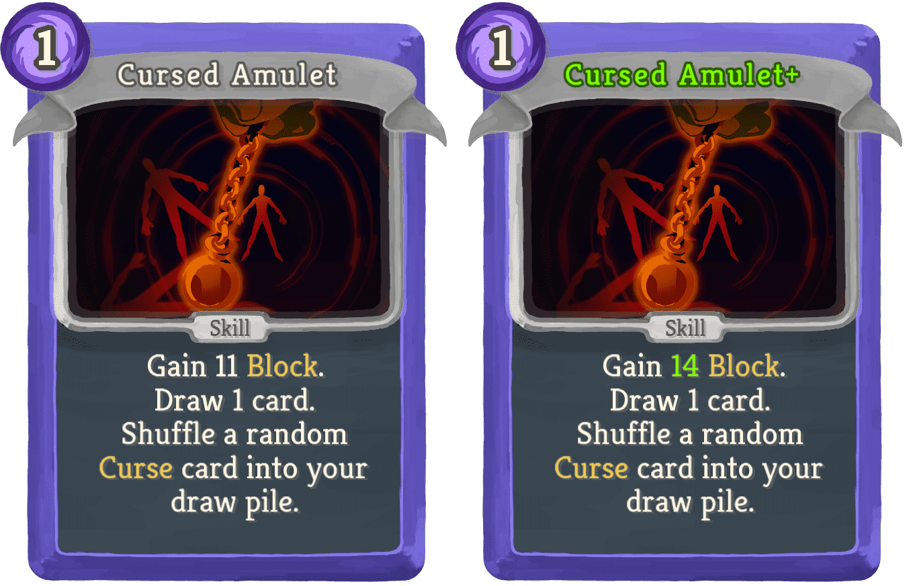 | Common | Skill | 1 | Gain 11 (14) Block. Draw 1 card. Shuffle a random Curse card into your draw pile. |
| Cursed Blade |  | Common | Attack | 1 | Deal 9 (12) damage to ALL enemies. Add a Dregs card into your hand. |
| Cursed Mace | 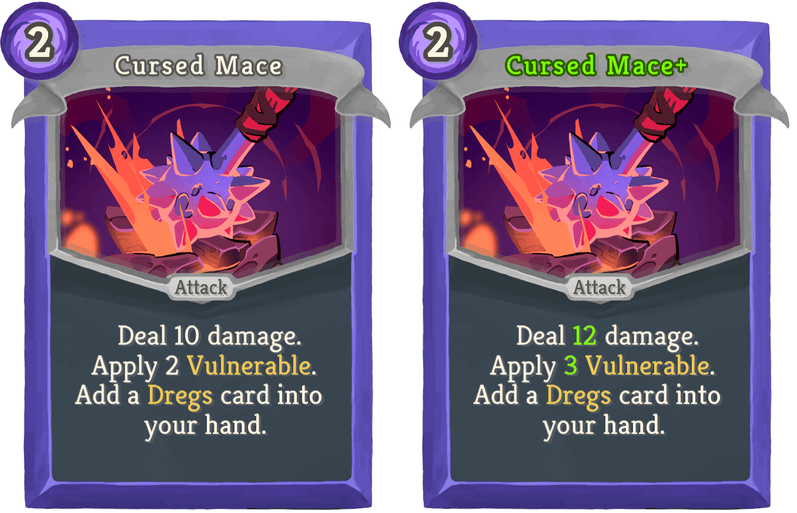 | Common | Attack | 2 | Deal 10 (12) damage. Apply 2 (3) Vulnerable. Add a Dregs card into your hand. |
| Cursed Shiv | 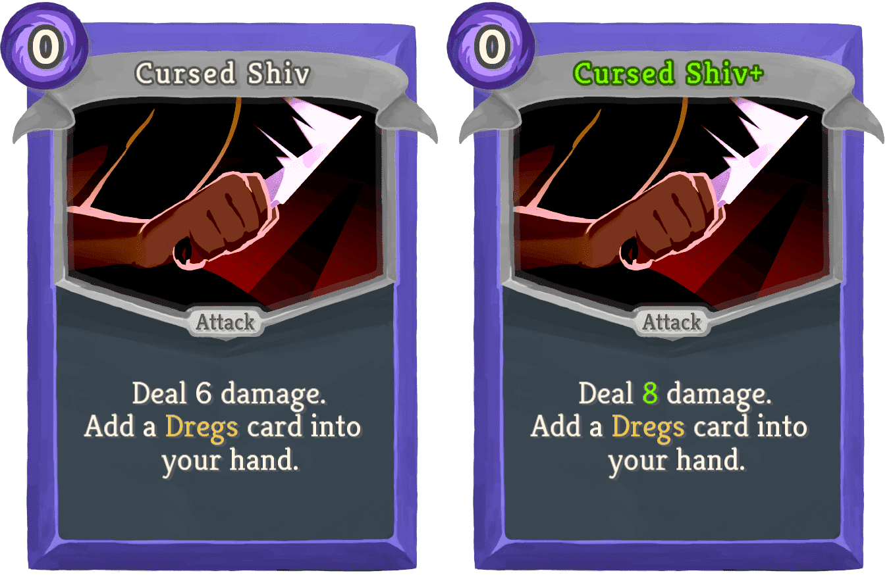 | Common | Attack | 0 | Deal 6 (8) damage. Add a Dregs card into your hand. |
| Flesh from Bone |  | Common | Skill | 1 | Rite : Gain 3 (4) Plated Armor. |
| Obscuration |  | Common | Skill | 1 | Gain 6 (8) Block. Rite : Gain 6 (8) Block again. |
| Rapid Movement |  | Common | Skill | 1 | Gain 7 (10) Block. Rite : Draw 2 cards. |
| Raving Staff |  | Common | Attack | X | Deal 8 (11) damage to a random enemy X times. |
| Smoke Screen |  | Common | Skill | 1 | Gain 5 (7) Block. Rite : Apply 2 (3) Weak to ALL enemies. |
| Spiteful Strike | 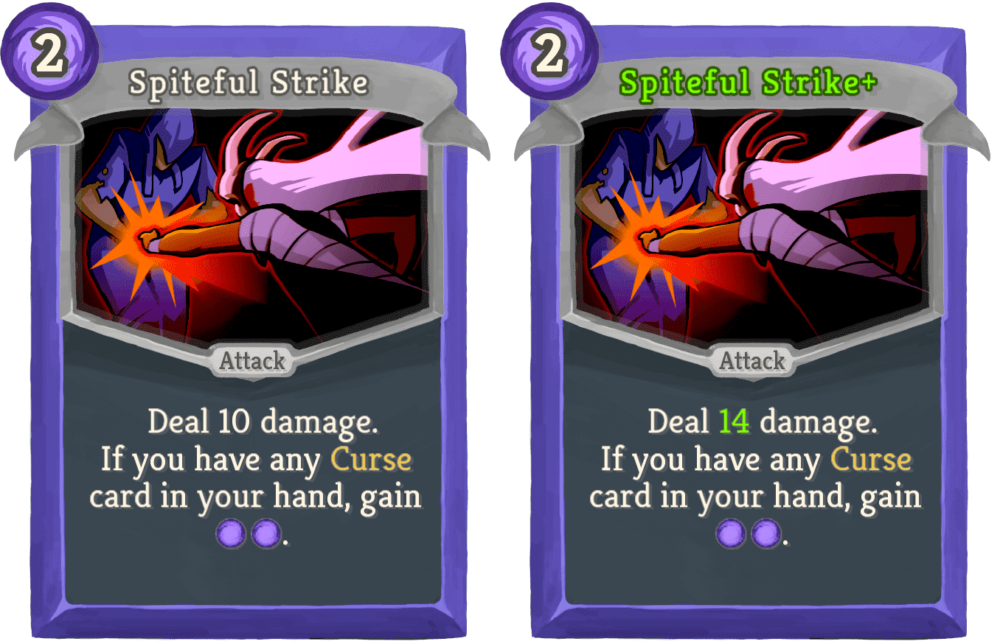 | Common | Attack | 2 | Deal 10 (14) damage. If you have any Curse card in your hand, gain [E] [E]. |
| Stigma |  | Common | Attack | 1 | Deal 7 (9) damage. Apply 3 (4) Bleed. |
| Stretching |  | Common | Skill | 0 | Gain 2 (4) Dexterity. At the end of this turn, lose 2 (4) Dexterity. |
| Surprise Attack |  | Common | Attack | 0 | Innate. Deal 5 (8) damage. Draw 1 card. Exhaust. |
| Tactical Strike |  | Common | Attack | 1 | Deal 9 (11) damage. Next turn, draw 1 (2) additional card(s). |
| Torture |  | Common | Skill | 1 (0) | Apply 5 Bleed. |
| Vital Strike |  | Common | Attack | 1 | Deal 8 (11) damage. If the enemy has Bleed, double the damage. |
| Wear Cloak | 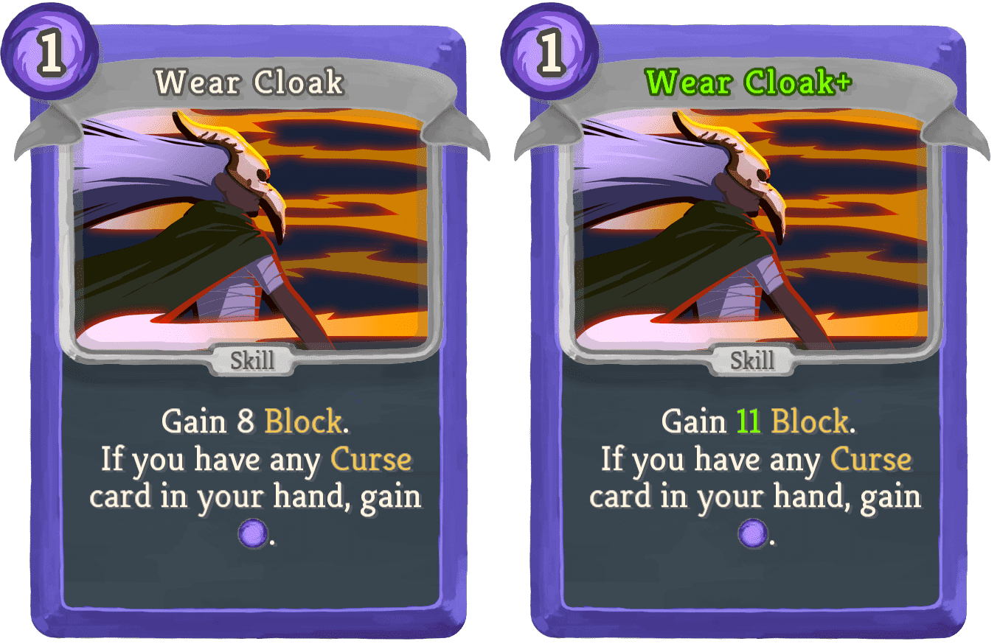 | Common | Skill | 1 | Gain 8 (11) Block. If you have any Curse card in your hand, gain [E]. |
| Wield |  | Common | Attack | 1 | Deal 7 (10) damage. Draw cards equal to the number of Unplayable cards in your hand. |
| Abyss Shockwave | 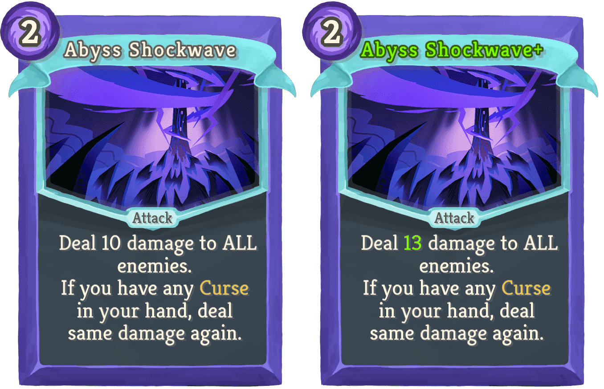 | Uncommon | Attack | 2 | Deal 10 (13) damage to ALL enemies. If you have any Curse in your hand, deal same damage again. |
| Ashes to Ashes |  | Uncommon | Skill | 1 | Rite : Draw 4 (5) cards. |
| Blessing in Disguise |  | Uncommon | Skill | 1 | Exhaust all Curse cards in your hand. Gain 8 (10) Block for each card Exhausted. |
| Blood Barrier | 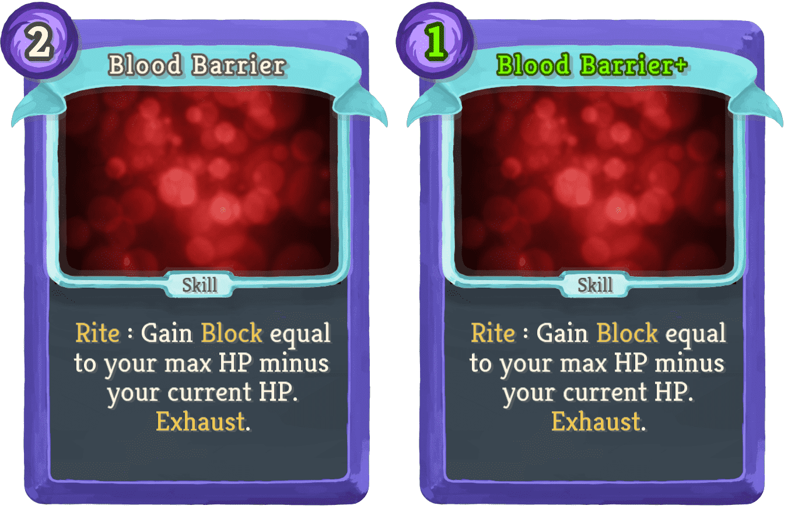 | Uncommon | Skill | 2 (1) | Rite : Gain Block equal to your max HP minus your current HP. Exhaust. |
| Circle of Amplification | 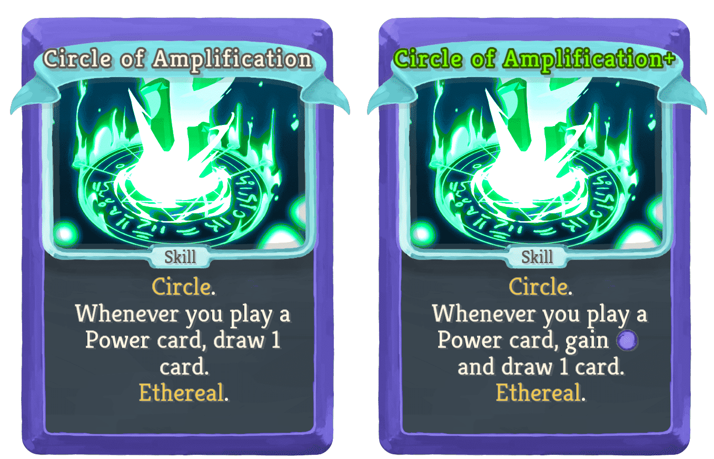 | Uncommon | Skill | | Circle. Whenever you play a Power card, (gain [E] and) draw 1 card. Ethereal. |
| Circle of Blood | 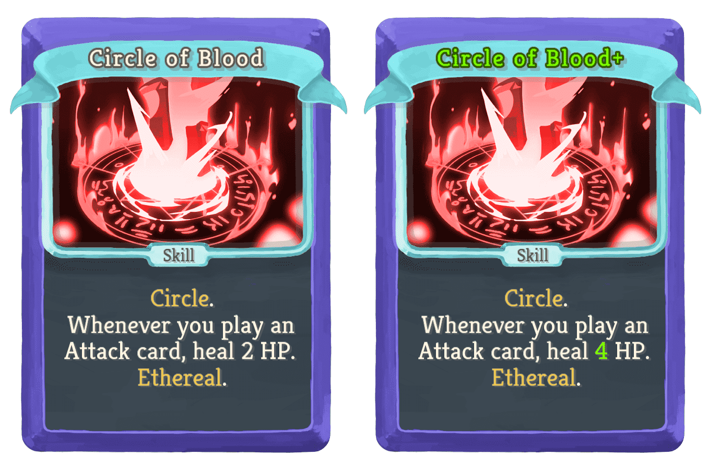 | Uncommon | Skill | | Circle. Whenever you play an Attack card, heal 2 (4) HP. Ethereal. |
| Circle of Focus |  | Uncommon | Skill | | Circle. Whenever you play a card that costs 3 (2) or more, gain [E]. |
| Circle of Windfury |  | Uncommon | Skill | | Circle. Whenever you play a cost 0 card, draw 1 card. Ethereal. (not Ethereal.) |
| Cursed Armor | 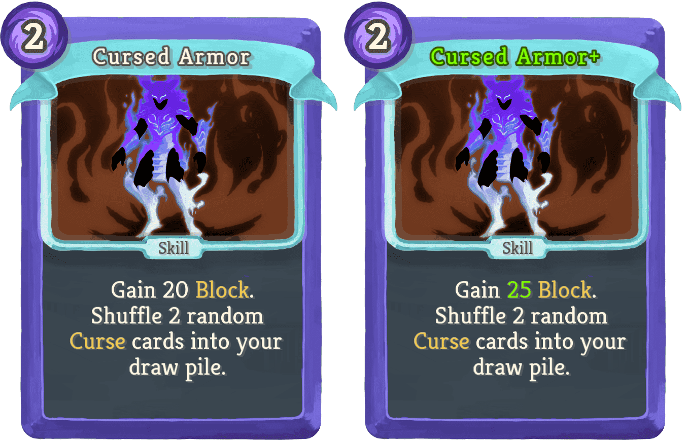 | Uncommon | Skill | 2 | Gain 20 (25) Block. Shuffle 2 random Curse cards into your draw pile. |
| Cursed Boomerang |  | Uncommon | Attack | 1 | Deal 4 damage to a random enemy 3 (4) times. Add a Dregs card into your hand. |
| Cursed Spellbook |  | Uncommon | Skill | 0 | Draw 3 (4) cards. Shuffle a random Curse card into your draw pile. |
| Cursed Staff |  | Uncommon | Attack | 2 | Deal 24 (30) damage. Add 2 Dregs cards into your hand. |
| Double Shield | 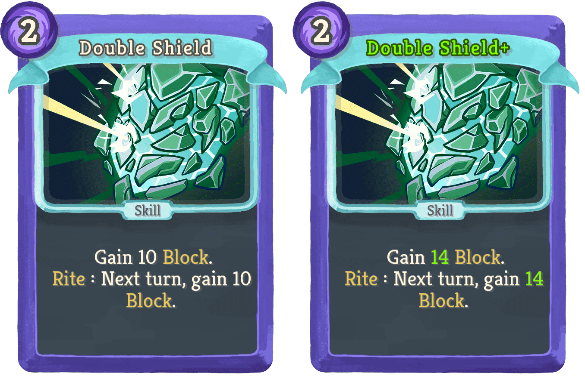 | Uncommon | Skill | 2 | Gain 10 (14) Block. Rite : Next turn, gain 10 (14) Block. |
| Empower Circles |  | Uncommon | Power | 3 (2) | Whenever you draw a Circle card, gain [E] and draw 1 card. |
| Evocation |  | Uncommon | Skill | 0 | Rite : Remove all of your debuffs. (If there is no debuff, gain 1 Artifact.) Exhaust. |
| Fury Strike | 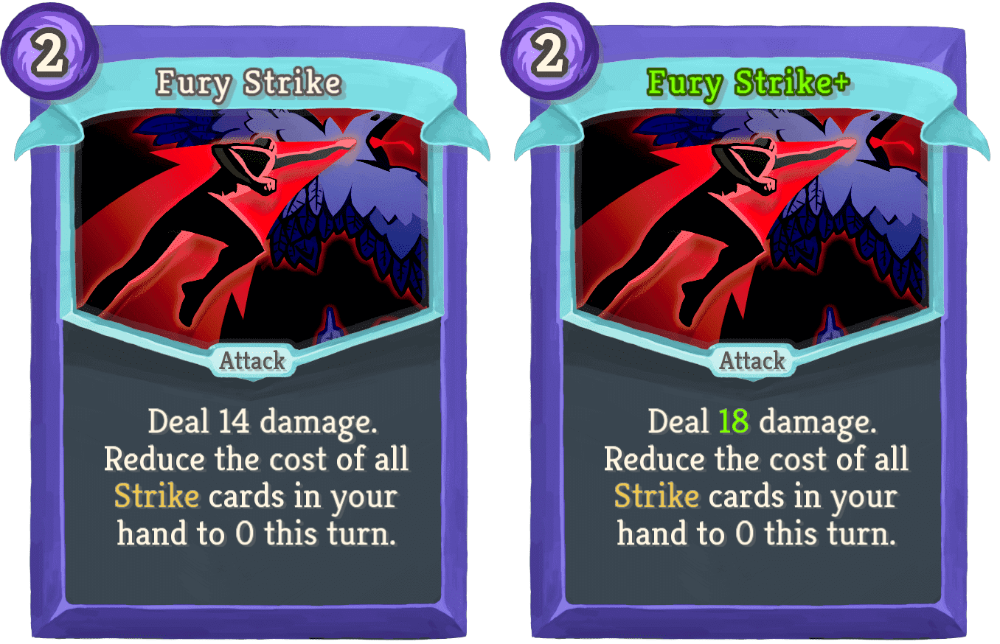 | Uncommon | Attack | 2 | Deal 14 (18) damage. Reduce the cost of all Strike cards in your hand to 0 this turn. |
| Grudge |  | Uncommon | Skill | 1 (0) | Add a random Rite card into your hand. It costs 0 this turn. Exhaust. |
| Hell's Gate Open | 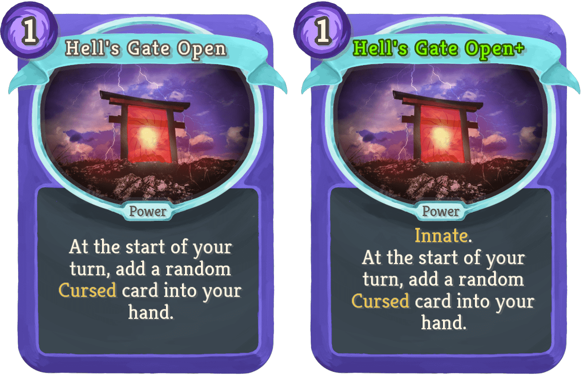 | Uncommon | Power | 1 | (Innate.)At the start of your turn, add a random Cursed card into your hand. |
| Hellfire Breathing | 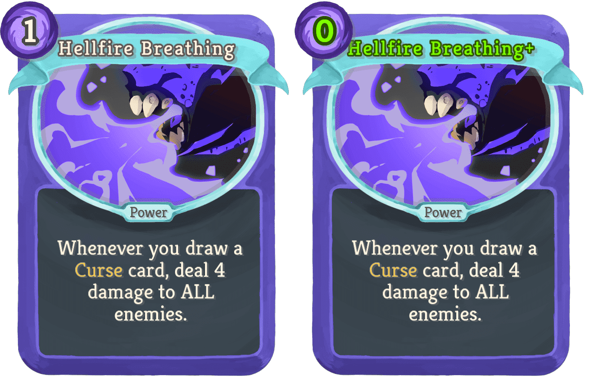 | Uncommon | Power | 1 (0) | Whenever you draw a Curse card, deal 4 damage to ALL enemies. |
| Hemoplague | 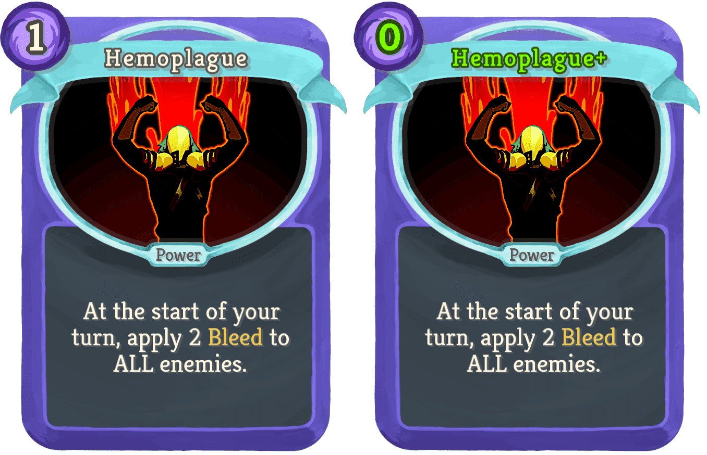 | Uncommon | Power | 1 (0) | At the start of your turn, apply 2 Bleed to ALL enemies. |
| Lucky Charm |  | Uncommon | Power | 1 | Whenever a Curse card is drawn or Exhausted, gain 3 (4) Block. |
| Mana Bullet |  | Uncommon | Attack | 1 | Deal 7 (8) damage for each Curse (Unplayable) card in your hand. |
| Mangle |  | Uncommon | Attack | 1 | Deal 5 (7) damage. If the enemy has Bleed, gain [E] and draw 1 card. |
| Prepare Rite | 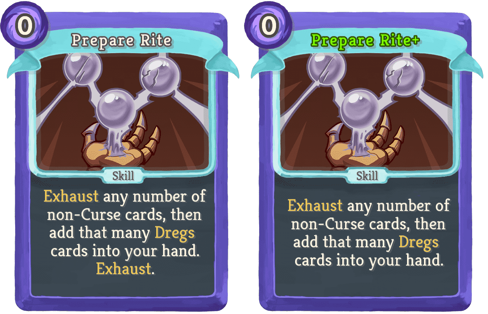 | Uncommon | Skill | 0 | Exhaust any number of non-Curse cards, then add that many Dregs cards into your hand. Exhaust. (not Exhaust.) |
| Released Knowledge |  | Uncommon | Skill | 0 | Rite : Add a random Circle card into your hand. Exhaust. (not Exhaust.) |
| Released Strength | 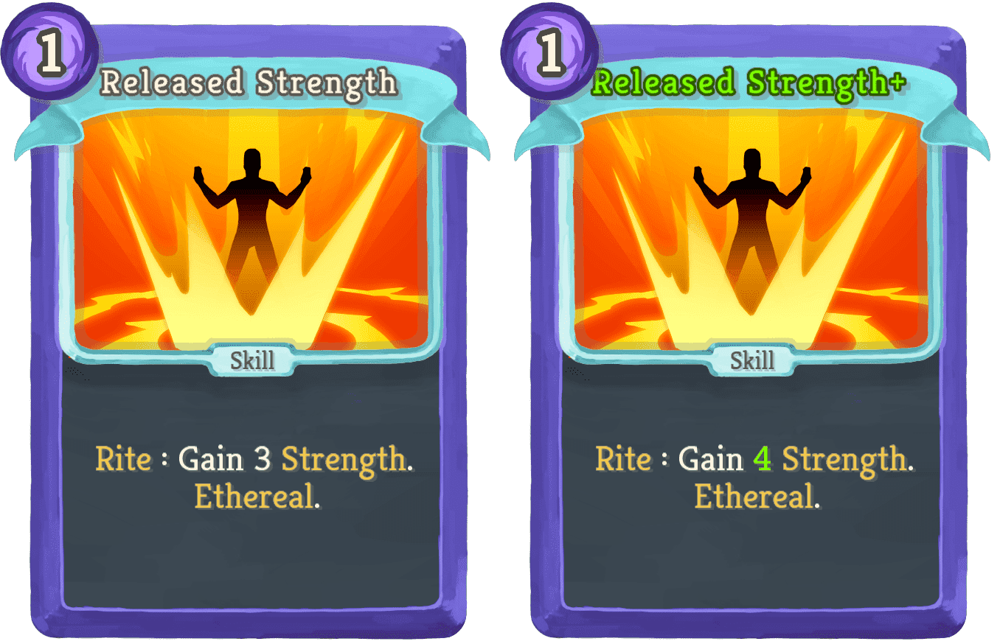 | Uncommon | Skill | 1 | Rite : Gain 3 (4) Strength. Ethereal. |
| Salt upon Wound | 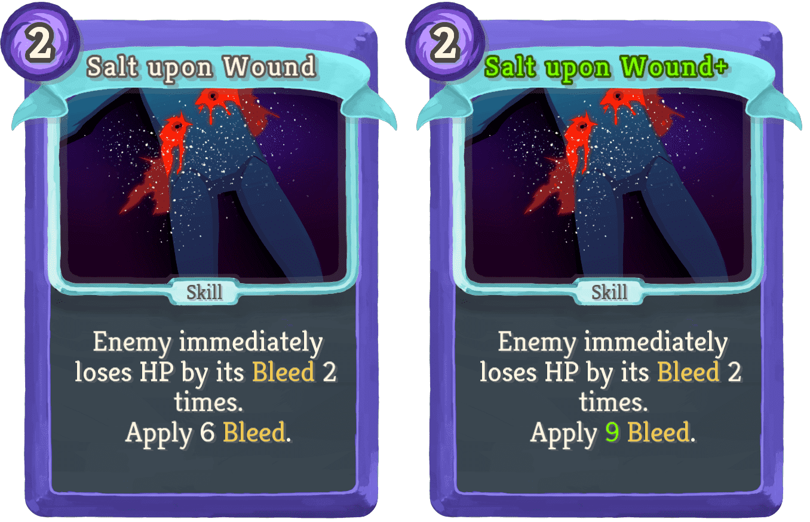 | Uncommon | Skill | 2 | Enemy immediately loses HP by its Bleed 2 times. Apply 6 (9) Bleed. |
| Soul Crush |  | Uncommon | Attack | 2 | Exhaust all Curse cards in your hand. Deal 18 (22) damage. |
| Soul Reap | 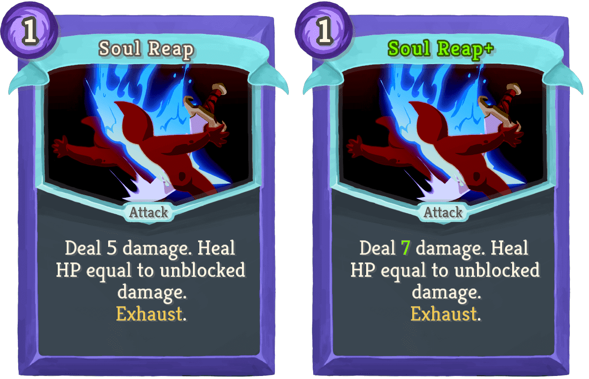 | Uncommon | Attack | 1 | Deal 5 (7) damage. Heal HP equal to unblocked damage. Exhaust. |
| Spiteful Plan | 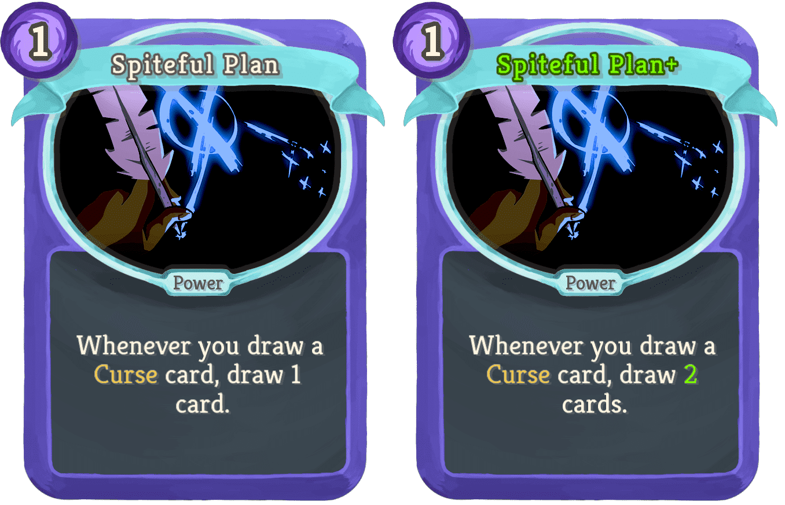 | Uncommon | Power | 1 | Whenever you draw a Curse card, draw 1 (2) card(s). |
| Spiteful Pray | 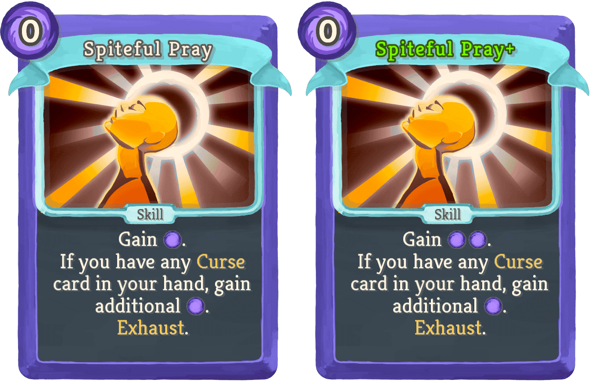 | Uncommon | Skill | 0 | Gain [E] ([E]). If you have any Curse card in your hand, gain additional [E]. Exhaust. |
| Spread Plague | 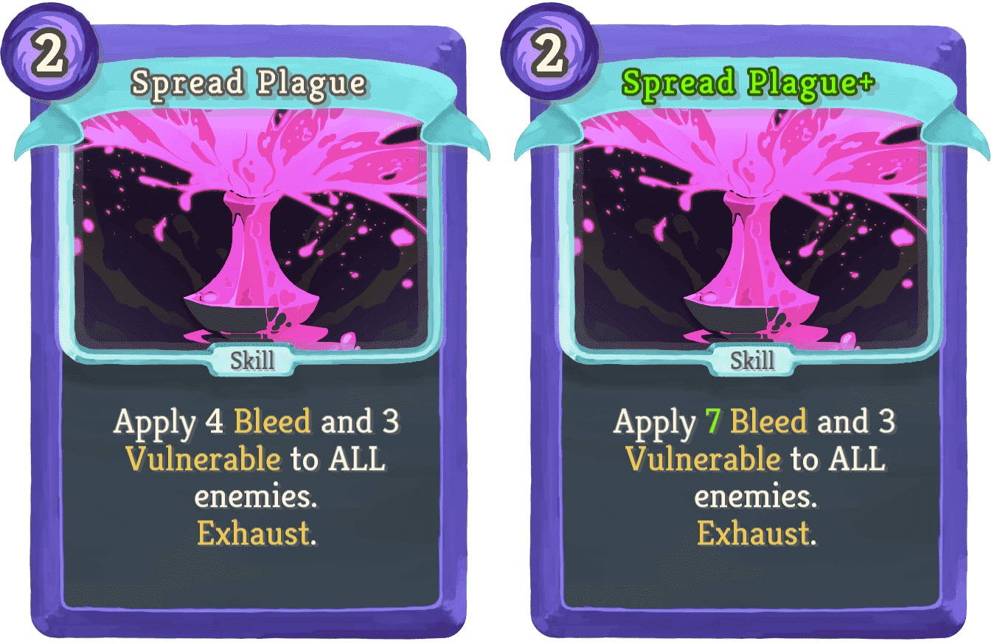 | Uncommon | Skill | 2 | Apply 4 (7) Bleed and 3 Vulnerable to ALL enemies. Exhaust. |
| Sting Eye |  | Uncommon | Attack | 0 | Deal 3 (4) damage. Apply 1 (2) Weak. Apply 1 (2) Bleed. |
| Troublous Minions |  | Uncommon | Skill | 0 | Whenever you draw this card, add a copy of it into your hand. Gain 5 (7) Block and add a Dregs card into your hand. Exhaust. |
| Anti-Aging |  | Rare | Skill | 2 | Gain 5 (7) Block. Rite : Raise your max HP by 2 (3). Exhaust. |
| Circle of Abyss |  | Rare | Skill | | Circle. Whenever you play a card, gain 2 (3) Block. If this card is Exhausted, (NL) gain [E] ([E]). |
| Collect Tribute |  | Rare | Power | 0 | (Innate.)At the start of your turn, gain [E] and add a random Curse card into your hand. |
| Cursed Relics | 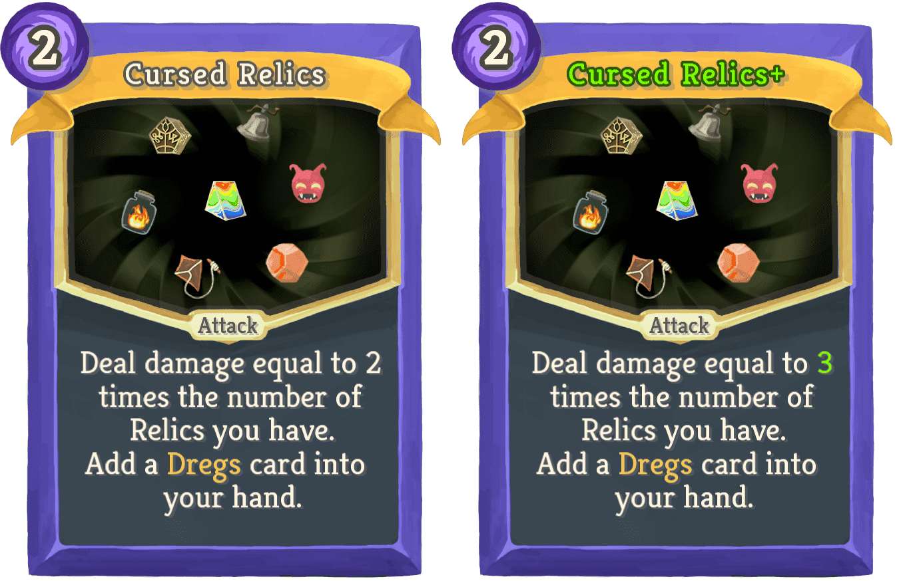 | Rare | Attack | 2 | Deal damage equal to 2 (3) times the number of Relics you have. Add a Dregs card into your hand. |
| Dark Barrier |  | Rare | Skill | 3 | Rite : Gain 1 (2) Intangible. Exhaust. |
| Demon Sword |  | Rare | Attack | 1 | Deal 11 (15) damage. Exhaust all Curse cards in your hand and gain 1 Strength for each Exhausted card. |
| Demonic Pact | 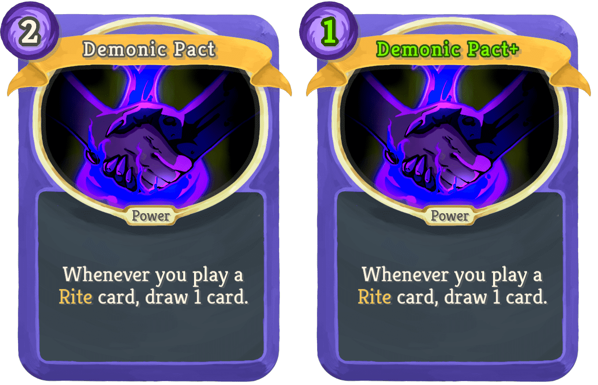 | Rare | Power | 2 (1) | Whenever you play a Rite card, draw 1 card. |
| Forbidden Alchemy | 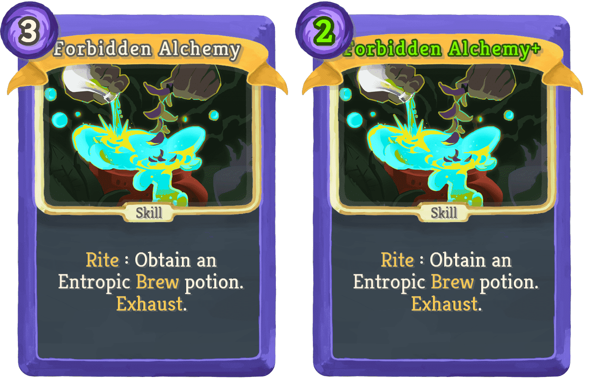 | Rare | Skill | 3 (2) | Rite : Obtain an Entropic Brew potion. Exhaust. |
| Mana Circulation |  | Rare | Power | 5 | Whenever a Curse card is Exhausted, gain [E]. Ethereal. (not Ethereal.) |
| Neow's Might | 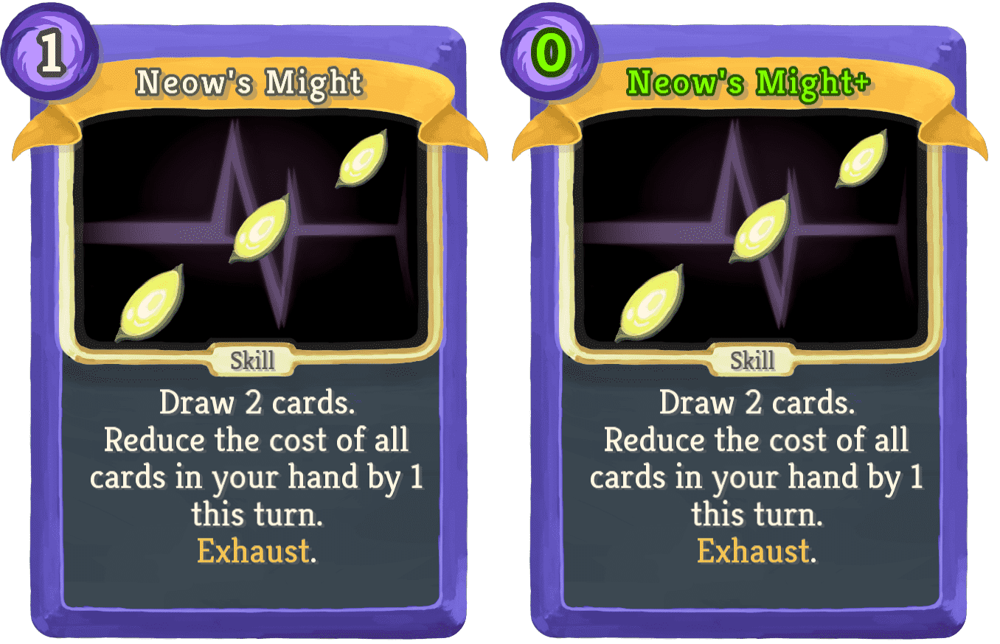 | Rare | Skill | 1 (0) | Draw 2 cards. Reduce the cost of all cards in your hand by 1 this turn. Exhaust. |
| Neurasthenia |  | Rare | Skill | 1 (0) | Exhaust all Curse cards in your hand. Enemy loses Strength by 1 plus the number of Exhausted cards. Exhaust. |
| Out for Blood | 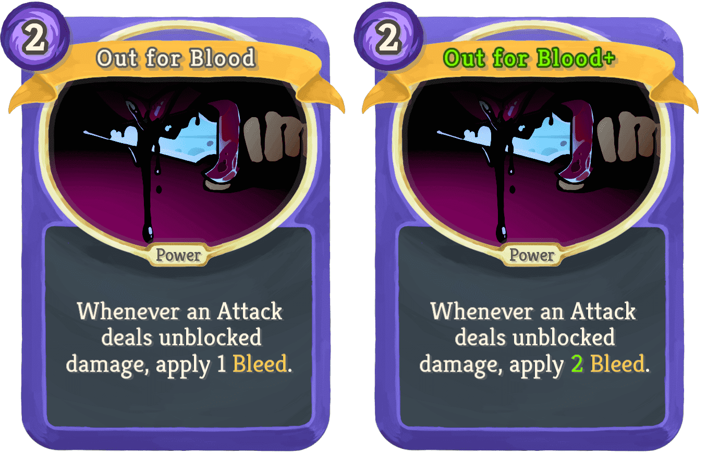 | Rare | Power | 2 | Whenever an Attack deals unblocked damage, apply 1 (2) Bleed. |
| Parallel World | 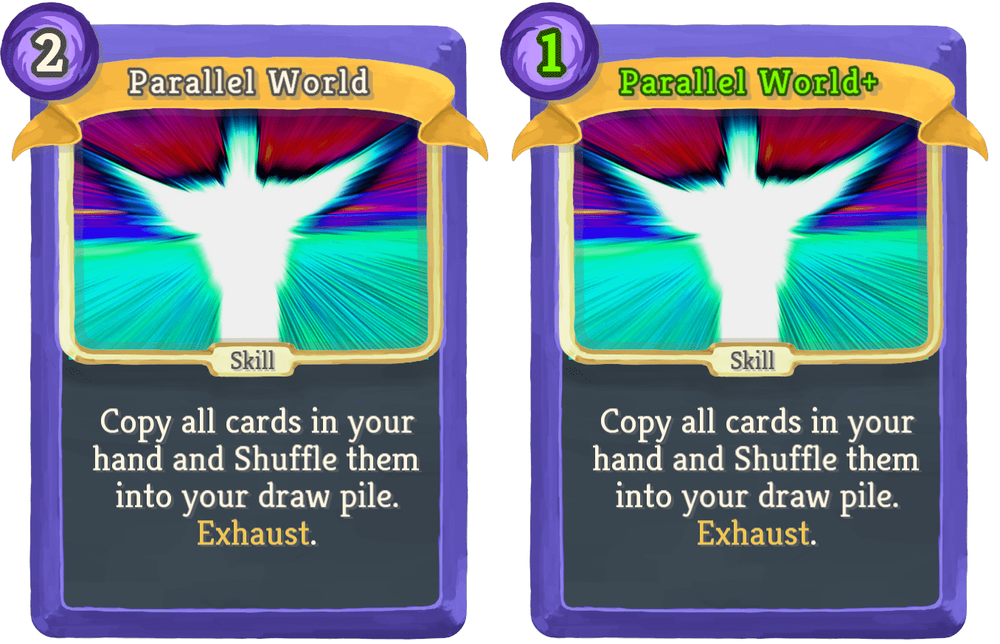 | Rare | Skill | 2 (1) | Copy all cards in your hand and Shuffle them into your draw pile. Exhaust. |
| Shock and Awe | 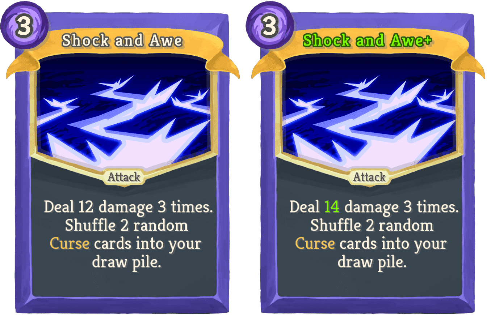 | Rare | Attack | 3 | Deal 12 (14) damage 3 times. Shuffle 2 random Curse cards into your draw pile. |
| Stunning Strike |  | Rare | Attack | 3 | Deal 20 (28) damage. If the enemy intends to attack, apply 1 Stun. Exhaust. |
| Ultimate Pain |  | Rare | Skill | X | ALL enemies immediately loses HP by its Bleed X (X+1) times. |
| Void Form |  | Rare | Power | 3 | Shuffle 2 random Curse cards into your draw pile. Whenever you draw a Curse, gain 2 (3) Strength. |
| Name | Image | Tier | Pool | Description | Flavor |
|---|
| Black Magic 101 | 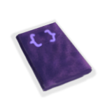 | Starter | The_cursed_purple | At the start of your turn, draw 1 additional card if your draw pile has any Curse card. | Learn about black magic now!!! {4th Edition} |
| Tack |  | Common | The_cursed_purple | At the start of each combat, apply 4Bleed to ALL enemies. | It hurts when stepping on. |
| Bloody Harpoon | 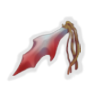 | Uncommon | The_cursed_purple | Whenever you apply Bleed, apply an additional 1Bleed. | Piercing with it, cannot move! |
| Demonic Mark |  | Uncommon | The_cursed_purple | Every time you activate an effect of Circle3 times in a single turn, gain 1Strength. | If you've seen this mark somewhere, you're just wrong. (Firmly) |
| Crystal Ball | | Rare | The_cursed_purple | Whenever a Curse card is Exhausted, deal 5 damage to a random enemy. | Did you say the color looks like Prismatic Shard? You've gone too far. |
| Magic Candle | 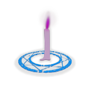 | Rare | The_cursed_purple | Every time you activate an effect of Circle10 times, gain [E]. | It collects nearby mana during Rite. |
| Soul Vessel | | Rare | The_cursed_purple | At the end of combat, heal HP equal to the number of ExhaustedCurse cards in this combat. | The feast of souls begins now! |
| Black Magic Advanced |  | Boss | The_cursed_purple | Replaces BlackMagic101. At the start of your turn, draw 2 additional cards if your draw pile has any Curse card. | [The effects of curses and magic circles on human's body and side effects] |
| Four-Leaf Clover Charm | | Boss | The_cursed_purple | Every time a card or a relic generates a random Curse card during combat, replace it with Dregs. | Good luck and happiness come from gratitude. |
| Ominous Mark | | Boss | The_cursed_purple | Gain [E] at the start of your turn. At the start of combat, shuffle 2 random Curse cards into your draw pile. | Take a closer look, the mark looks shaking... |
| Pink Pellets |  | Shop | The_cursed_purple | Every time you activate an effect of Circle5 times in a single turn, remove all of your debuffs. | Selling with Orange Pellets! |
{kind=link}
{kind=link}
{kind=link}
{kind=link}
{kind=link}
{kind=link}
{kind=link}
{kind=link}
{kind=link}
{kind=link}
{kind=link}
{kind=link}
{kind=link}
{kind=link}
{kind=link}
{kind=link}
{kind=link}
{kind=link}
{kind=link}
{kind=link}
{kind=link}
{kind=link}
{kind=link}
{kind=link}
{kind=link}
{kind=link}
{kind=link}
{kind=link}
{kind=link}
{kind=link}
{kind=link}
{kind=link}
{kind=link}